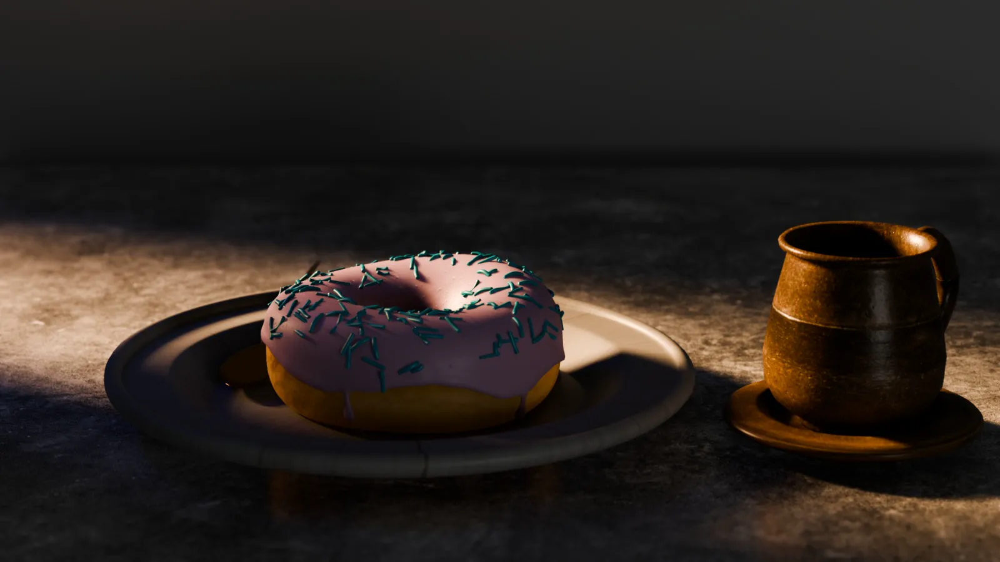
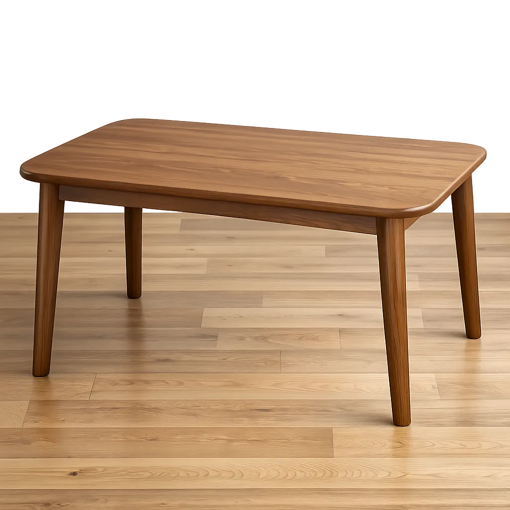
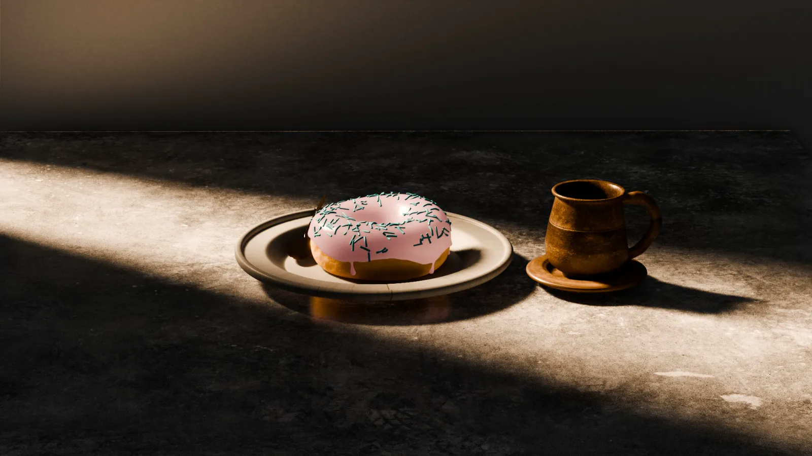
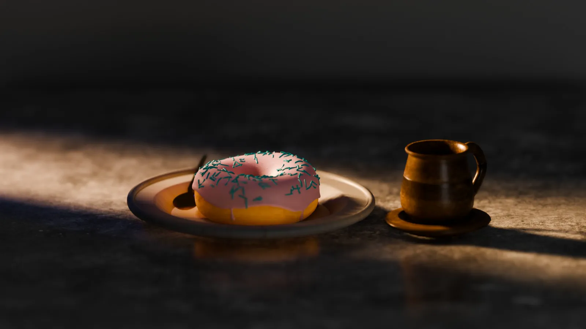
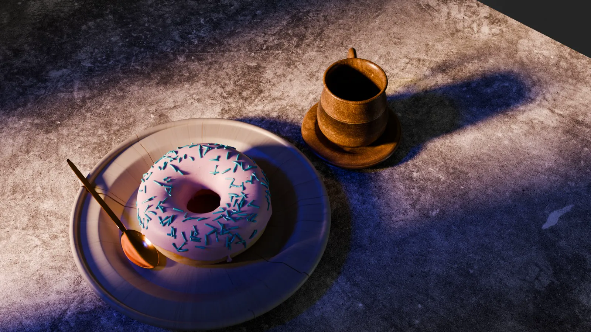

Skills / 02
3D Modelling
Learning · 2/5
Props and scenes in Blender, lit until they feel real.
Tools
- Blender
- Cascadeur
- Unreal Engine
Tech
- Modelling
- Texturing
- Lighting
- Rendering
Methods
- Hard-surface
- Sculpting
- Shading
- Depth of field
Renders





Proof of work